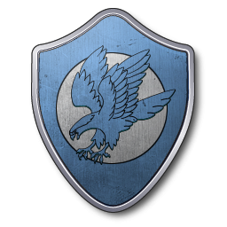
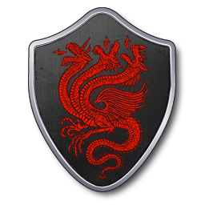
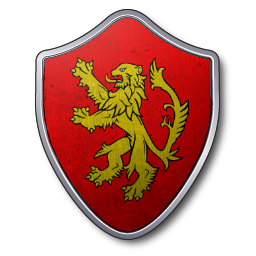

S’il est une famille que tout le monde connait en tant que seigneur du Nord, c’est bien la maison Stark. Au plus lointain qu’il est possible de remonter, les Stark ont toujours régné sur la province du Nord. La maison Stark est donc la suzeraine du royaume de Winterfell. On dit que le sang des premiers hommes coulent dans les veines des Stark, et ce, depuis plus de 8000 ans.
Compte tenu de la situation géographique de la maison, la devise des Stark est "L’hiver vient". En effet, la famille Stark demeure à Winterfell qui est située au Nord du royaume des Sept couronnes et par conséquent, le dernier rempart face aux invasions des sauvageons pendant l’hiver. Selon la légende, Winterfell a été bâtie par Bran le bâtisseur et des géants lors de l’âge des héros. Cependant, le château de Winterfell dispose d’une situation assez douce compte tenu de sa disposition nordique. Pendant l’hiver, la demeure des Stark devient le centre du royaume du Nord lorsque les villages avoisinant de Winterfell se joignent à la ville. En effet, les bâtisseurs ont réussi à capter les sources d’eau chaude lors de la construction afin d’aménager la cité autour des zones de chaleur. L’hiver y est donc nettement plus paisible. Winterfell dispose également d’une crypte dans laquelle se trouve l’ensemble des rois du Nord.
Le blason de la famille Stark est un loup gris sur fond blanc. Les allusions à la nature et au froid sont prépondérantes au travers des insignes de la maisonnée. Les membres de la famille se font appeler : "les Seigneurs du Nord" ou "les Gardiens du Nord".